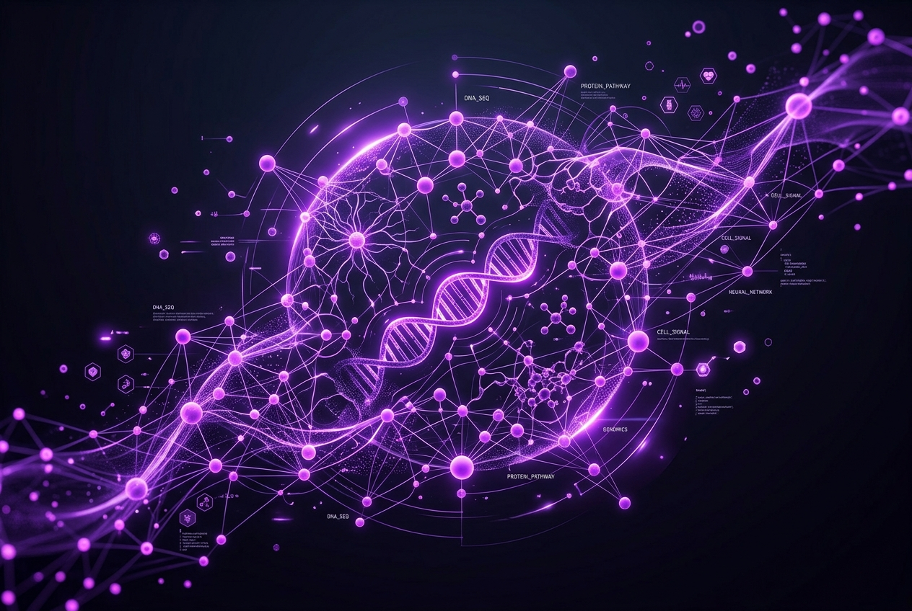
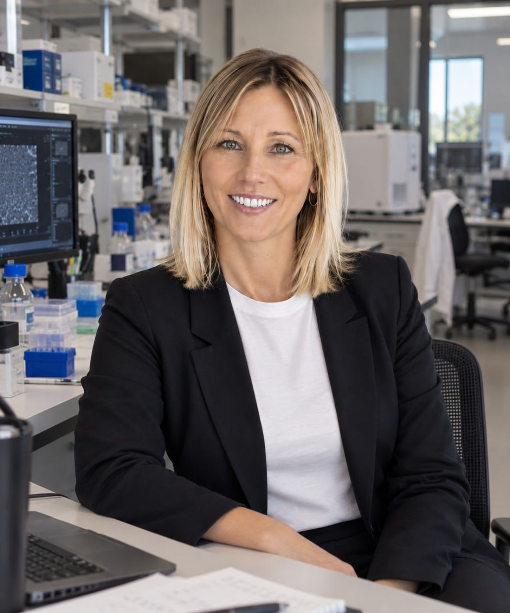

About QAIbio
QAIbio is a technology company operating at the intersection of artificial intelligence, life sciences, microbiome research, and data science.
Backed by strategic investment from QAI, our purpose is to translate vast biological complexity into precise, individualized health insights.

What We Do
Our work focuses deeply on understanding complex biological and health-related data. While traditional software systems process structured data, human biological data is highly diverse and incomplete. We navigate this complexity to better understand the distinct physiological differences between individuals and explore personalized approaches to health interventions.
Our Vision
At our core, QAIbio is driven by the philosophy that technology should ultimately serve people. We believe truly valuable technology solves real problems and creates lasting value. The true value of AI is not to replace life sciences, but to serve as a powerful tool to identify overlooked patterns within complex biological datasets.
AI & Life Sciences
We bridge data science and life sciences, using machine learning to analyze relationships between probiotics, the gut microbiome, and individual nutritional responses. By exploring factors like gut composition and metabolic data, our research aims to build advanced models for individual nutritional response prediction.
Our research focuses on using machine learning and artificial intelligence to analyze relationships between probiotics, the gut microbiome, and individual nutritional responses.
We work to extract strain-level characteristics from complex probiotic and microbial datasets, establishing relationships among strains, nutrition, metabolic indicators, and individual responses, and using these datasets for machine learning model training.
During model development, our relevant research expertise leverages PyTorch, TensorFlow, and XGBoost to explore probiotic intervention outcomes. We also use hyperparameter optimization, model validation, and explainability techniques such as SHAP and LIME to improve model stability and interpretability.
One of the key areas we focus on is the research and development of an individual nutritional response prediction model.
This model integrates gut microbiome composition, dietary records, basal metabolic information, and individual behavioral data to explore how different individuals may respond differently to nutritional and probiotic interventions.
By identifying potentially overlooked patterns within large and complex biological datasets, we aim to better understand physiological differences between individuals.
Leadership
ALYA JONES
Alya bridges the gap between deep computational intelligence and life sciences, leading QAIbio's mission to build technologies that solve real problems and create lasting human value.
Core Expertise

ALEXANDRA BECKSTEIN
Driving the technological vision at QAIbio through extensive expertise in deep tech and strategic investment.
Advisory Board
Our Approach
Technology
Advanced infrastructure
Data
Complex biological sets
AI Engine
Pattern recognition
Biology
Microbiome insights
Human Value
Real-world impact
Leadership Perspective on
Community Impact
"Our leadership holds a strong, personal commitment to community involvement, a perspective that stems from Alya Jones's early university volunteer work in Singapore."
She began by providing basic mathematics and computer tutoring to children from low-income families, realizing that access to the right tools is often the key to overcoming educational disparities.
Over the years, this personal commitment expanded into practical contributions—from providing simple websites and digital tools to local community organizations, to making donations related to children's education, elderly care, and disadvantaged families.
One defining initiative involved a refurbished laptop project for a single mother raising two children. By simply configuring educational software, internet access, and basic productivity tools, it became clear that meaningful charity does not always require grand gestures; it is about solving specific problems when you have the ability to do so.
Business teaches us how to create value, while charity reminds us that value should ultimately return to people.
Get in Touch
Interested in our research, potential partnerships, or learning more about QAIbio? Reach out to our team.
Headquarters
QAIbio
Palo Alto, California
(Stanford University Area)
Phone
+1 (341) 238-2275
team@qaisbio.com